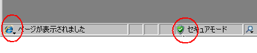
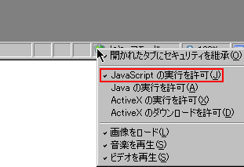
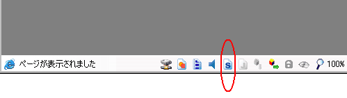
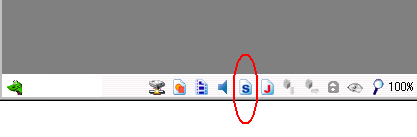
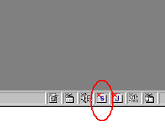

|
GeocitiesとNazcaの一部広告を消す 2005/11/22 今回の広告を消すことのできるブラウザーは、「Sleipnir」と、 「Lunascape」です。 1.Sleipnirの場合(Internet Explorerエンジン使用時)  この丸をつけた部分を見てください。左の丸と同じアイコン( Internet Explorer)であることを確認したら、右の丸をつけたアイ コンの部分を右クリックしてください。  このようなメニューが出るので、四角く囲った「Java Scriptの 実行を許可」のチェックを外してください。 2.Lunascapeの場合(IE、Gecko両方)   この丸をつけた部分をクリックして、アイコンを半透明にしてく ださい。 3.Lunacpae Liteの場合(IEの場合のみ確認)  丸をつけたアイコンの部分をクリックし、画像と同じアイコンにしてくだ さい。 Lunascape,Lunascape Lite URL : http://www.lunascape.jp/ Sleipnir URL : http://www.fenrir.co.jp/sleipnir2/ 何か分からないことがあっても質問しないでください ルディンガルドの光 2005/09/14 「ルディンガルドの光」というゲームがありました。過去形とな っているのは、かなり前に発売されたソフトであると共に、販売元 の会社がいまはもうないためです。 では、なぜ唐突にこのゲームの話題を出したかといえば、このゲ ームがあまりに世に知られていないゲームだからです。年齢制限な しのファンタージービジュアルのベルのゲームで、選択肢によるシ ナリオの変化やモンスターとの戦闘などがあり、なかなかおもしろ いゲームです。しかも、今としては珍しいジャンルでしょう。 もしこのゲームが売っているのを見かけたら、買わなくてもいい ので手に取ってみてください。プレミアは付かないでしょうが、珍 しいことには変わりありません。 一応、管理人はこのゲーム持っています。 Nazcaの広告を消す 2005/09/?? 一体いくつやれば気が済むのかと聞かれそうですが、新しい広告が 現れたので、消す方法を紹介しておきます。 あくまでも、ユーザー側で消す方法ですが。 一応、Firefoxのみですが、このURLをそれなりのプラグインやツー ルで指定しておけば大丈夫でしょう。 1.Adblockを導入 2.Preferencesに「http://www.kk.iij4u.or.jp/」を追加 以上です。何か分からないことがあっても質問しないでください。 |